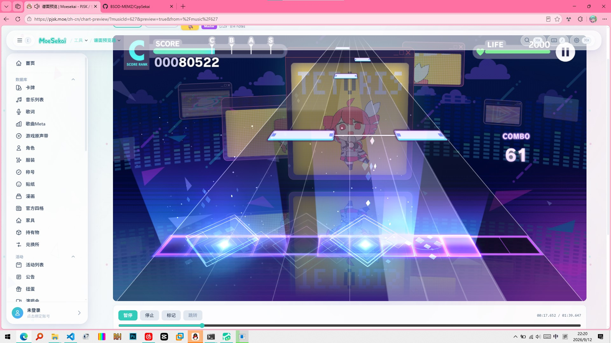

世界计划（在国内被称为《初音未来：缤纷舞台》，有时简称为PJSK或烤）是一个非常棒的音乐节奏类手机社交卡牌网络游戏，下面是一些游戏截图（一年打不了几次，玩的相当菜）
但是学校那么大一块屏幕不能打游戏确实有点遗憾，况且还支持多点触摸。。wmc想出勤了可以用MajdataPlay，而烤批手痒了只能看谱面确认。所以我萌生了将pjsk移植到Windows的想法。
踩在巨人的肩膀上
发现一个开源项目：sekai-mmw-preview-web它可以在网页中预览pjsk的SUS格式谱面，并且还原程度相当高（如图所示）

有了这个参考，工作量瞬间减轻了不少。虽然这明显是一个web项目，但令人吃惊的是，这个项目大量使用C++代码！
我决定使用C++进行Windows原生开发——一是可复用大量代码块，二是没有占用极大的Unity之类的游戏引擎。我对Electron深恶痛绝，我只想做一个学校垃圾电脑也能跑满60帧的音游，这也是为什么项目命名为CppSekai。
那么，C++20写代码，SDL2输入事件处理，OpenGL 3.3 core的渲染机制形成了。
大氛编时代来临
由于本人C++水平堪比两斤鸡粪，如果没有DeepSeek V4.1 Flash、GLM 5.3 Flash、Hy4-Preview和WorkBuddy给的免费token（没接广，我真心不喜欢tx的东西，但是有免费鸡蛋我还是要的）支持，我不可能完成这个项目（
ScreenShot
开发
虽说有上述GitHub repo作参考，但它只适用于AutoPlay，也就是说判定逻辑什么的还是要自己来，约等于自己从头写一个音游。
我们从上游SpriteSheet素材移植粒子系统，然后对着原游戏截图一帧一帧地分析坐标。尤其是为了还原那个选取界面，我爬取了Moesekai的资产浏览器。
但是不管怎么样，我拿不到pjsk的source，只能靠自己印象还原啦。
未来？
事实上，我感到十分矛盾和困惑：我应该在自己“新造一个游戏”的路上越走越远，还是坚持还原原版游戏？
目前我是继承上游AGPL 3.0许可证开源，但实际上，我直接引用官方的资源，用什么许可证都是不合适的。
并且，世界计划的魅力远远不止于单纯的音乐游戏，但如果我把抽卡、剧情、烤森什么的都还原，工程量多大先不说，sega绝对是要告我的（
我后期工作重心主要是增加多人模式（校内多台一体机联机，我们学校变成神山高校指日可待）和添加…中二节奏…手台…支持?
セカイ？
世界计划中的星乃一歌等人就是误打误撞来到了「世界」中，并与6位虚拟歌手相遇。虚拟歌手们以不同的形象出现并生活在不同的「世界」中，帮助人们找到他们真实的「心愿」。
所以我想，我正在用技术创造属于我的「世界」。